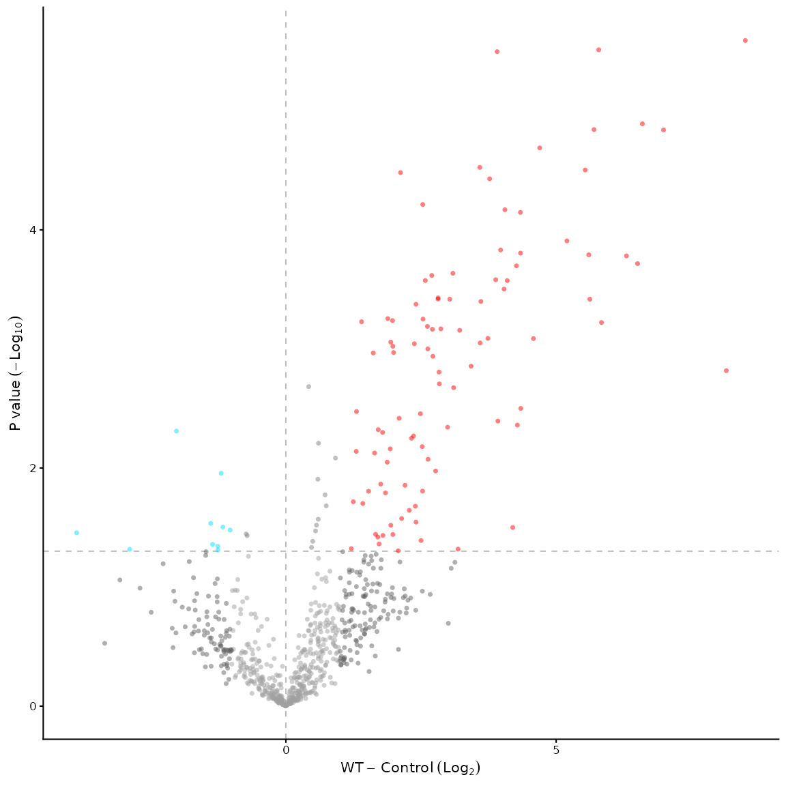
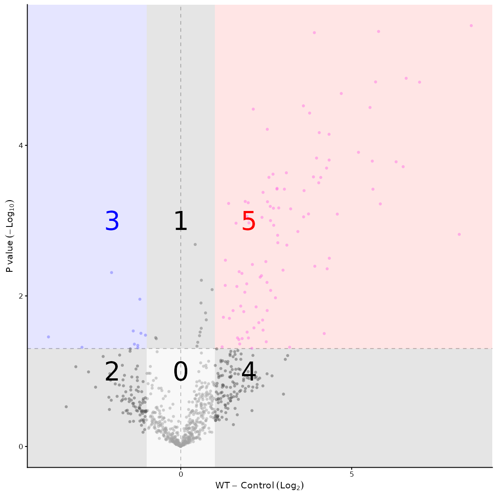
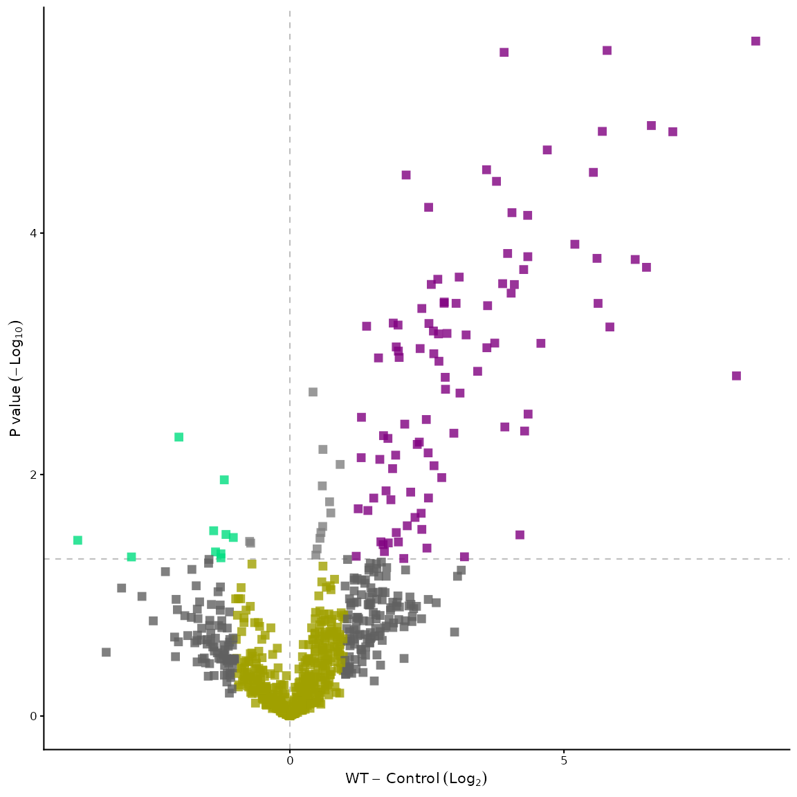
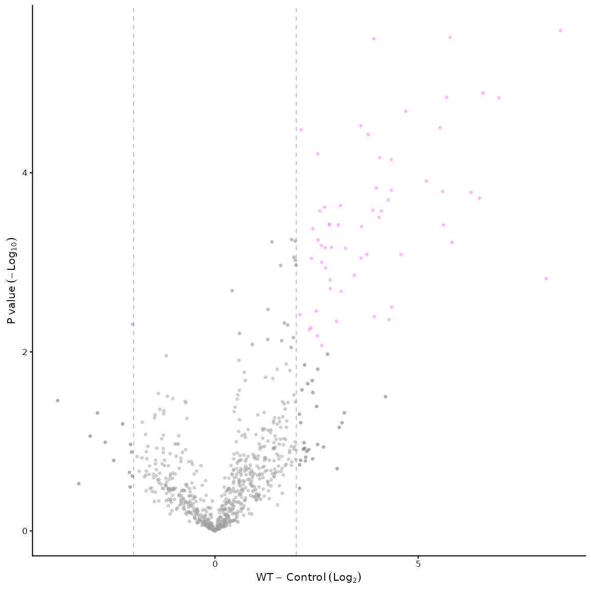
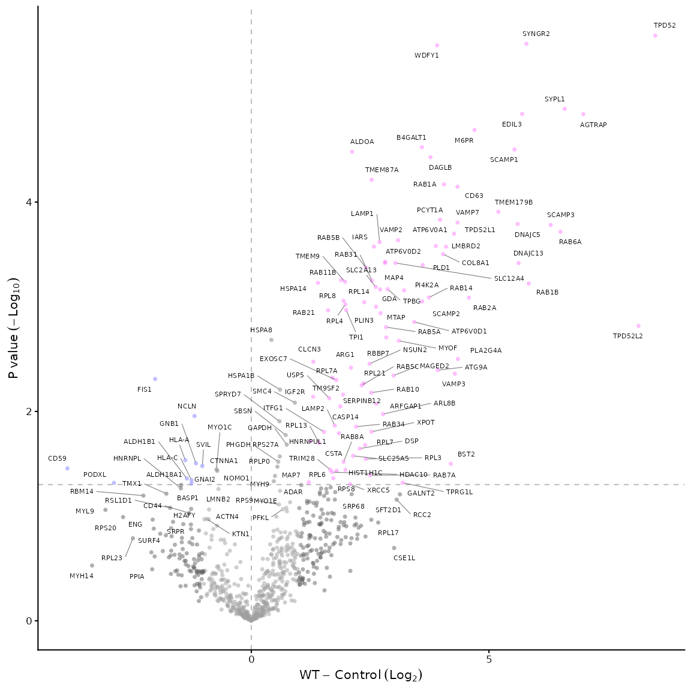
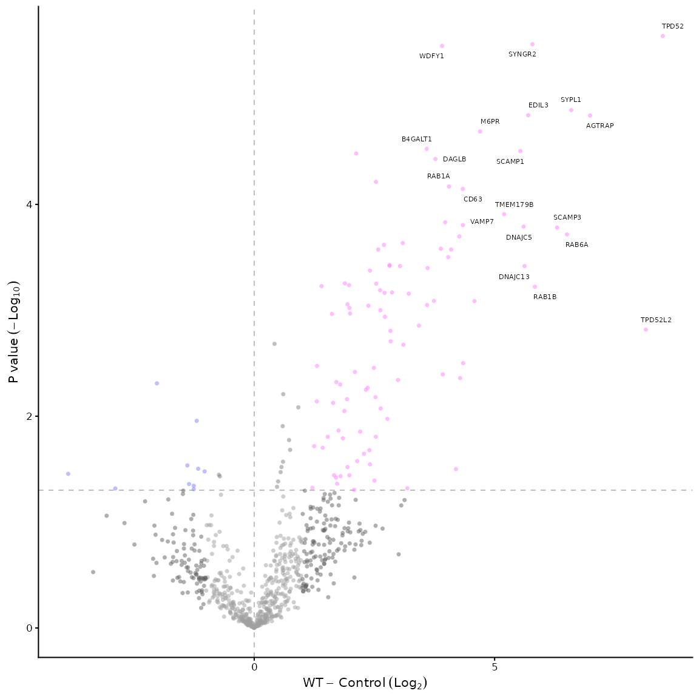
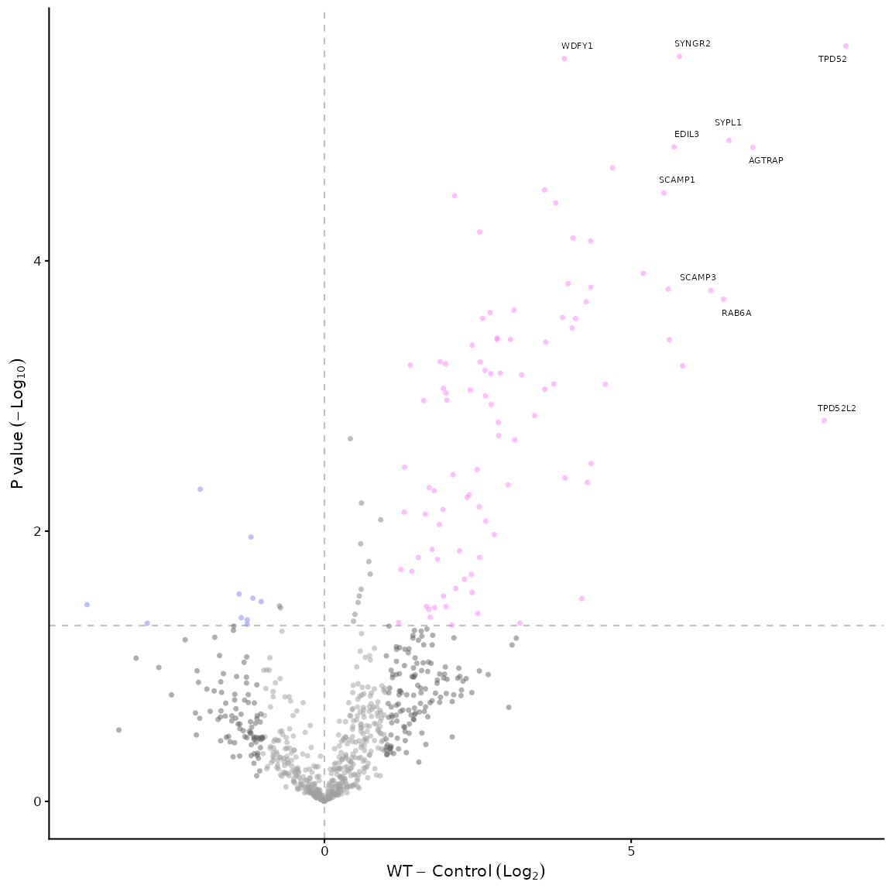
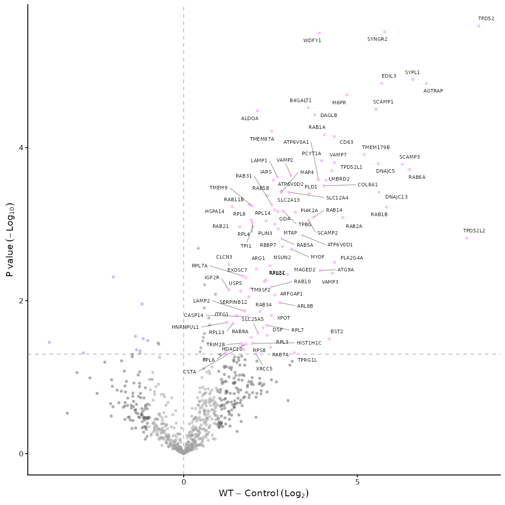
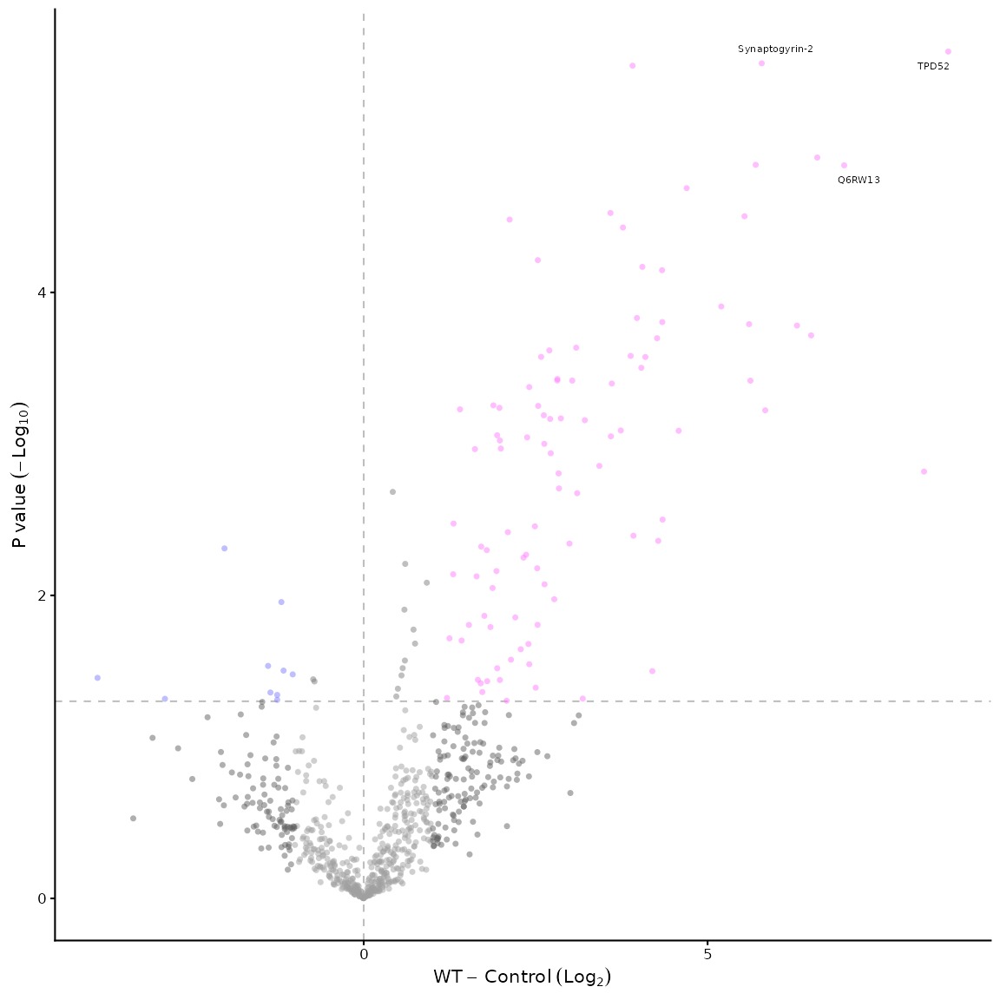
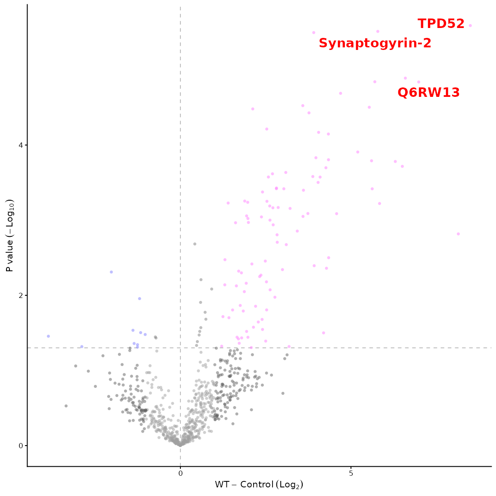

Changing Volcano Plot Appearance
appearance.RmdVirtually all aspects of the volcano plot can be customised. The main
customisations are listed here with examples, but other customisations
are possible, see the documentation for the
volcano_plot_maxquant() function for more details.
Changing colours
To change the colour of the points in the volcano plot, you can use
the vp_colours parameter of the
volcano_plot_maxquant() function. The default colours are
set to a specific palette, but you can change them to any colours you
like.
library(VolcanoPlotR)
# load and process the example file
filepath <- system.file("extdata", "proteinGroups.txt", package = "VolcanoPlotR")
# get the filename from the path
filename <- basename(filepath)
# get the directory name
filedir <- dirname(filepath)
df <- load_maxquant(file = filename, datadir = filedir)
df <- process_maxquant(df, group1 = "WT", group2 = "Control")
#> Using specified groups: WT versus Control
volcano_plot_maxquant(df, vp_colours = c("0" = "#a0a0a0", "1" = "#808080",
"2" = "#606060", "3" = "#00ddff",
"4" = "#606060", "5" = "#ff0000"))
The first thing to understand is how the volcano plot is divided into “sectors”. The sectors are defined by the thresholds for p-value and fold change. The default thresholds are 0.05 for p-value and 1 for fold change, which divides the plot into 6 sectors (named 0 to 5). The sectors are defined as follows:
- Sector 0: p > 0.05 and |log2FC| < 1
- Sector 1: p <= 0.05 and |log2FC| < 1
- Sector 2: p > 0.05 and log2FC <= -1
- Sector 3: p <= 0.05 and log2FC <= -1
- Sector 4: p <= 0.05 and log2FC >= 1
- Sector 5: p > 0.05 and log2FC >= 1
To visualise this:

Knowing which sectors you’d like to colour differently, you can then
specify the colours for each sector using the vp_colours
parameter of the volcano_plot_maxquant() function. The
colours are specified as a named vector, where the names correspond to
the sector numbers (0 to 5) and the values are the colours you want to
use.
Another example of changing the colours of the points in the volcano plot is shown below. We also alter the alpha, size and shape of the points.
volcano_plot_maxquant(df, vp_colours = c("0" = "#a0a000", "1" = "#808080",
"2" = "#606060", "3" = "#00dd80",
"4" = "#606060", "5" = "#800080"),
point_args = list(size = 2,
shape = 15,
alpha = 0.8))
Changing thresholds
A related concept is changing the thresholds for p-value and fold
change. This can be done using the threshold_p and
threshold_fc parameters of the
volcano_plot_maxquant() function. The default thresholds
are 0.05 for p-value and 1 for fold change, but you can change them to
any values you like.
The colouring will automatically be adjusted and the lines to
demarcate the plots can be modified using the p_line,
zero_line and x_line parameters of the
volcano_plot_maxquant() function.
volcano_plot_maxquant(df, threshold_p = 0.01,
threshold_fc = 2,
p_line = FALSE,
zero_line = FALSE,
x_line = TRUE)
Labelling proteins of interest
Adding labels to proteins of interest is done using the
label_points parameter of the
volcano_plot_maxquant() function. The default is to label
no points, but you can label all points, the top n points, the top n
points in a specific sector, or specify proteins of interest to
label.
# rather than the default: volcano_plot_maxquant(df) we will (try to) label all proteins
volcano_plot_maxquant(df, label_points = "all")
# or we can label the top 20
volcano_plot_maxquant(df, label_points = "top_20")
# or we can label the top 10 proteins in sector 5 only
volcano_plot_maxquant(df, label_points = "5_10")
# labelling all proteins in sector 5 is done like this
volcano_plot_maxquant(df, label_points = "5_all")
# to label specific proteins we can use a character vector of protein names, e.g.
volcano_plot_maxquant(df, label_points = c("TPD52", "Q6RW13", "Synaptogyrin-2"))
# they can be either a Gene.names, Protein.names, Protein.ID or a mix but whatever value you give will be used to label the protein. Note, it must be an exact match.
# if you'd like to customise the labels, you can pass a list of arguments to the label_args parameter, e.g.
volcano_plot_maxquant(df, label_points = c("TPD52", "Q6RW13", "Synaptogyrin-2"), label_args = list(size = 4, colour = "red", fontface = "bold"))